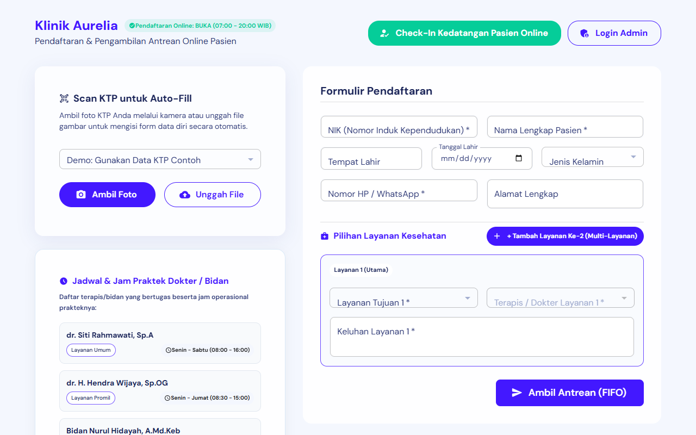
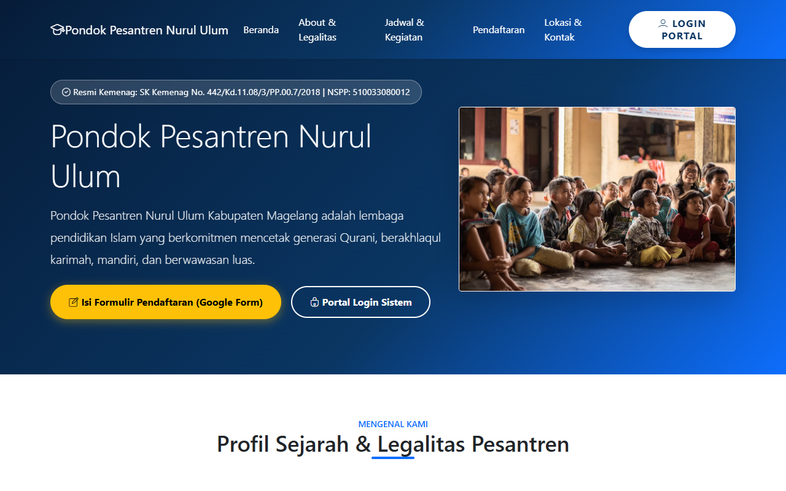

Portofolio resmi anagwer dengan rekam jejak 200+ sistem perangkat lunak nyata di 23+ sektor industri (Enterprise ERP, Sistem Pakar, Pendidikan/SIAKAD, Retail POS, IoT & Data Science) sekaligus menyediakan layanan asistensi teknologi, pembuatan website kustom & WordPress, dan kebutuhan digital terpadu.
Layanan asistensi skripsi/TA khusus IT, serta bantuan tugas harian, pembuatan website bisnis/WordPress, slide presentasi PPT, dan desain grafis yang terbuka untuk SEMUA JURUSAN.
Pendampingan komprehensif pembuatan program skripsi/TA IT dari nol atau melanjutkan sistem yang macet/error (Web, Mobile, SPK, AI, Database, hingga bedah kodingan dan persiapan sidang).
Jasa pembuatan website profesional untuk bisnis, UMKM, instansi, maupun portofolio pribadi. Tersedia opsi WordPress CMS (mudah dikelola sendiri) maupun Custom Web.
Bantuan penyelesaian tugas koding harian, penyusunan laporan praktikum, pengolahan spreadsheet data, dan tugas kuliah dengan format penulisan akademis rapi siap kumpul.
Ubah materi laporan yang panjang menjadi slide presentasi PowerPoint / Canva yang estetik, terstruktur, berbasis infografis, dan memukau bagi dosen penguji maupun juri bisnis.
Pembuatan mockup antarmuka prototipe Figma interaktif, poster ilmiah penelitian, brosur promosi, banner digital, serta materi grafis pendukung dokumen laporan.
Tidak hanya web development, anagwer berpengalaman dalam riset model Machine Learning & Deep Learning (Python), pengembangan aplikasi desktop GUI CRUD (Java), serta perancangan algoritma & alur logika sistem (C++).
Implementasi komprehensif Computer Vision, Deep Learning (CNN/ResNet/VGG16/PyTorch), Machine Learning (SVM, Random Forest, KNN), Time Series Forecasting, dan NLP:
Pembuatan aplikasi desktop interaktif berbasis GUI (Swing / NetBeans GUI Form), integrasi basis data JDBC MySQL, validasi form, dan arsitektur berorientasi objek bersih:
Perancangan alur logika sistem terstruktur, simulasi alur bisnis berbasis console (CLI), dan penguasaan mendalam struktur data algoritma fundamental:
Setiap sistem dibangun dengan arsitektur dan teknologi yang paling tepat untuk menjawab tantangan fungsionalnya.
Pengembangan arsitektur server-side yang aman, scalable, dan efisien dalam pengolahan data.
Antarmuka interaktif yang cepat, intuitif, ramah pengguna, dan responsif di berbagai perangkat.
Implementasi kalkulasi matematis kompleks untuk pendukung keputusan dan penalaran berbasis aturan.
Integrasi perangkat industri, monitoring telemetri sensor, dan pipeline data otomatis.

Solusi antrean online dan pendaftaran pasien klinik modern dengan auto-fill scan KTP, pendaftaran multi-layanan/poli terapis, serta antrean FIFO real-time.

Sistem informasi terpadu profil pondok pesantren Nurul Ulum dan administrasi santri lengkap dengan legalitas Kemenag, pendaftaran online, dan portal login sistem.
Aplikasi sistem pakar cerdas diagnosis penyakit dan hama tanaman kopi menggunakan inferensi Certainty Factor (CF) dengan perhitungan akurat dan rekomendasi penanganan.
Gunakan filter kategori, dropdown teknologi, atau ketik langsung di kolom pencarian untuk menemukan proyek yang spesifik. Dilengkapi navigasi halaman (*pagination*) agar lebih rapi.
Siap melayani pengerjaan tugas akademik harian, asistensi skripsi/TA, pembuatan website bisnis/WordPress, hingga slide presentasi dan desain grafis dengan fast response dan kualitas terjamin.